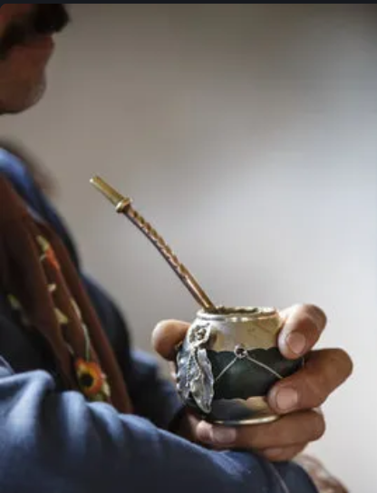

El origen:
Surge en la cultura de los pueblos indígenas guaraníes los cuales consumían la infusión de yerba mate mucho antes de la llegada de los colonizadores europeos. La práctica de preparar y consumir mate se extendió luego a otras poblaciones indígenas y eventualmente fue adoptada por los colonizadores españoles y portugueses. A lo largo del tiempo, el mate se ha convertido en una parte integral de la cultura y la identidad de muchas regiones de América del Sur.